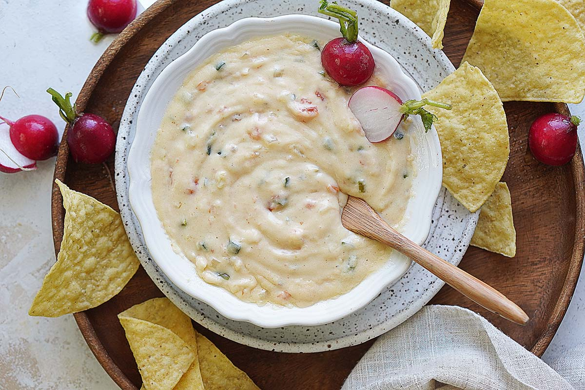

White Cheese Dip

Cheesy dip that can be eaten with tortilla chips.
Ingredients
- 24 ounces white American cheese, cubed
- 12 ounces Monterey Jack cheese, cubed
- 1 pint half-and-half
- 1 pint heavy whipping cream
- 1 (4 ounce) can diced jalapenos peppers, drained
- 1 cup frozen chapped sp
Steps
- Combine American cheese, Monterey Jack cheese, half-and-half, cream, and jalapeno peppers in a large saucepan over medium-low heat: gradually stir spinach into mixture, a few tablespoon at a time. Cook and stir dip until melted and smooth, 15 to 20 minutes.